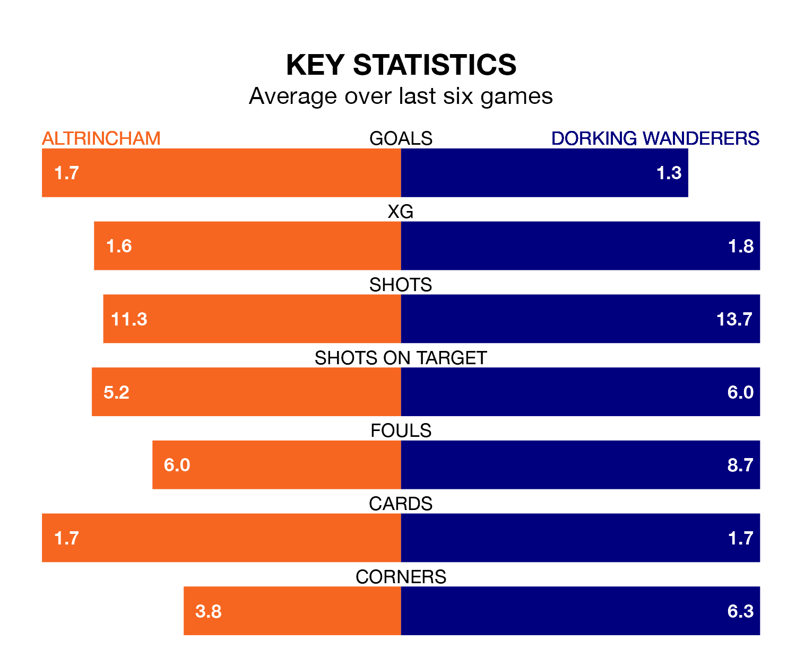

Altrincham are heavy favourites to keep all three points at home in Tuesday's late kick-off against Dorking Wanderers.
Robins, who sit fourth in National League with 29 games played, are priced at 1.4 to seal victory at the J. Davidson Stadium.
Sitting 15 places and 15 points behind them in the table, Dorking are 6.0 to win with *Betting Company*, while the draw is at 4.5.
With 54 goals in 29 games so far this season, Altrincham are scoring more than average in the league with 1.9 goals per game. And they are conceding fewer than average, letting in 38 goals at a rate of 1.3 per game.
Dorking, meanwhile, are below average scorers, with 1.2 goals per game, compared to a league average of 1.5. They have conceded 1.7 goals per game.
Over the last two years, Altrincham and Dorking have played each other twice. They won one each.
Their last meeting was on April 15, when Dorking won 3-2 at home.
Robins are in mixed form in National League, with three wins and a draw from their last six games.
With three wins and three losses over that period, Wanderers' form is slightly worse – they have taken nine points from 18, compared to the home team's 10.
Altrincham's last match was on Saturday, a 1-0 win against Solihull Moors, with Justin Amaluzor getting the goal for Robins.
Dorking lost 3-1 against Fylde last time out, also on Saturday, with Matt Briggs on the scoresheet.
Updated: 14:59 (UTC), 05/02/24